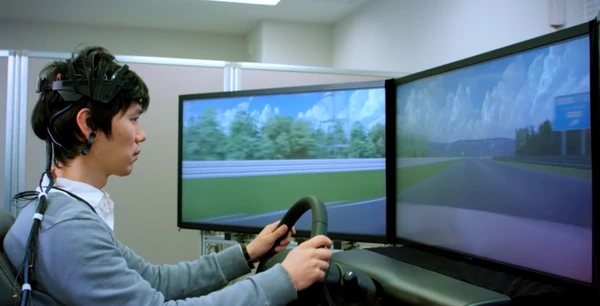

La formación de un profesional mecánico se adquiere después de varios años de aprendizaje tanto teórico como práctico. Este aprendizaje se imparte en los institutos de formación profesional. Un profesional mecánico que continúe sus estudios, puede titularse como ingeniero mecánico y puede trabajar en la oficina técnica de proyecto y diseño de maquinaria y equipos industriales.
 Nissan presento una innovadora tecnologia que permitira el vehiculo interpretar las ondas cerebrales del conductor para asistirlo en la conduccion. se trata de un sistema que bautizaron Brain-tovehicle(B2V) y que en traduce "del cerebro al Vehiculo".
La mecánica automotriz es la rama de la mecánica que estudia y aplica los principios propios de la física y mecánica para la generación y transmisión del movimiento en sistemas automotrices, como son los vehículos de tracción mecánica.